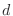
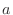
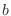
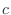

Next: MODELLER updates Up: Frequently asked questions and Previous: Frequently asked questions and Contents Index
Please also check the mailing list archives and the release notes.
This can be accomplished using the standard AutoModel class (see Chapter 2). The alignment should be as follows when the chimera is a combination of proteins A and B:
proteinA aaaaaaaaaaaaaaaaaaaaaaaaaaaa---------------------------------- proteinB ----------------------------bbbbbbbbbbbbbbbbbbbbbbbbbbbbbbbbbb chimera aaaaaaaaaaaaaaaaaaaaaaaaaaaabbbbbbbbbbbbbbbbbbbbbbbbbbbbbbbbbb
In the PIR format the alignment file is:
>P1;proteinA structureX:proteinA aaaaaaaaaaaaaaaaaaaaaaaaaaaa----------------------------------* >P1;proteinB structureX:proteinB ----------------------------bbbbbbbbbbbbbbbbbbbbbbbbbbbbbbbbbb* >P1;chimera sequence:chimera aaaaaaaaaaaaaaaaaaaaaaaaaaaabbbbbbbbbbbbbbbbbbbbbbbbbbbbbbbbbb*
If no additional information is available about the relative orientation of the two domains the resulting model will probably have an incorrect relative orientation of the two domains when the overlap between A and B is non-existing or short. To obtain satisfactory relative orientation of modeled domains in such cases, orient the two template structures appropriately before the modeling.
The easiest way to achieve this is to not align that region of the template with the target sequence. If region 'bbbbbbbb' of the template should not be used as a template for region 'eeeee' of the target sequence the alignment should be like this:
template aaaaaaaaaaaaaaaaaaaaaaaa-----bbbbbbbbcccccccccccccccccccccccccccccc target ddddddddddddddddddddddddeeeee--------ffffffffffffffffffffffffffffff
The effect of this alignment is that no homology-derived restraints will be produced for region 'eeeee'.
MODELLER should usually be allowed to handle this automatically via the omega dihedral angle restraints, which are calculated by default.
from modeller import *
from modeller.automodel import *
from modeller.scripts import cispeptide
# Redefine the special_restraints routine to force Pro to cis conformation:
# (this routine is empty by default):
class MyModel(AutoModel):
def special_restraints(self, aln):
a = self.atoms
cispeptide(self.restraints,
atom_ids1=(a['O:4'], a['C:4'], a['N:5'], a['CA:5']),
atom_ids2=(a['CA:4'], a['C:4'], a['N:5'], a['CA:5']))
# This is as usual:
log.verbose()
env = Environ()
a = MyModel(env, alnfile='align1.ali', knowns='templ1', sequence='targ1')
a.make()
Restraints can be read from a file by Restraints.append(), calculated by Restraints.make() or Restraints.make_distance(), or added “manually” by Restraints.add(). Restraints.pick() picks those restraints for objective function calculation that restrain the selected atoms only. The 'AutoModel.homcsr()' routine contains examples of selecting atoms when generating restraints by Restraints.make_distance(). There are also commands for adding and unselecting single restraints, Restraints.add() and Restraints.unpick(), respectively. If you do Restraints.condense(), the unselected restraints will be deleted. This is useful for getting rid of the unwanted restraints completely.
See Section 2.2.2.
See Sections 2.2.1 and 2.2.5 for some examples.
from modeller import * from modeller.automodel import * log.verbose() env = Environ() env.io.hydrogen = env.io.hetatm = env.io.water = True a = AllHModel(env, alnfile='align1.ali', knowns='templ1', sequence='targ1') a.make()
See Section 2.2.1 for an example.
This is a painful area in all molecular modeling programs. However, CHARMM and X-PLOR provide a reasonably straightforward solution via the residue topology and parameter libraries. MODELLER uses CHARMM topology and parameter library format and also extends the options by allowing for a generic “BLK” residue type (Section 5.2.1). This BLK residue type circumvents the need for editing any library files, but it is not always possible to use it. Due to its conformational rigidity, it is also not as accurate as a normal residue type. In order to define a new residue type in the MODELLER libraries, you have to follow the series of steps described below. As an example, we will define the ALA residue without any hydrogen atoms. You can add an entry to the MODELLER topology or parameter file; you can also use your own topology or parameter files. For more information, please see the CHARMM manual.
RESI ALA 0.00000 ATOM N NH1 -0.29792 ATOM CA CT1 0.09563 ATOM CB CT3 -0.17115 ATOM C C 0.69672 ATOM O O -0.32328 BOND CB CA N CA O C C CA C +N IMPR C CA +N O CA N C CB IC -C N CA C 1.3551 126.4900 180.0000 114.4400 1.5390 IC N CA C +N 1.4592 114.4400 180.0000 116.8400 1.3558 IC +N CA *C O 1.3558 116.8400 180.0000 122.5200 1.2297 IC CA C +N +CA 1.5390 116.8400 180.0000 126.7700 1.4613 IC N C *CA CB 1.4592 114.4400 123.2300 111.0900 1.5461 IC N CA C O 1.4300 107.0000 0.0000 122.5200 1.2297 PATC FIRS NTER LAST CTER
You can obtain an initial approximation to this entry by defining the new residue type using the residue type editor in QUANTA and then writing it to a file.
The RESI record specifies the CHARMM residue name, which can be up to four characters long and is usually the same as the PDB residue name (exceptions are the potentially charged residues where the different charge states correspond to different CHARMM residue types). The number gives the total residue charge.
The ATOM records specify the IUPAC (i.e., PDB) atom names and the CHARMM atom types for all the atoms in the residue. The number at the end of each ATOM record gives the partial atomic charge.
The BOND records specify all the covalent bonds between the atoms in the residue (e.g., there are bonds CB-CA, N-CA, O-C, etc.). In addition, symbol '+' is used to indicate the bonds to the subsequent residue in the chain (e.g., C - +N). The covalent angles and dihedral angles are calculated automatically from the list of chemical bonds.
The IMPR records specify the improper dihedral angles, generally used to restrain the planarity of various groups (e.g., peptide bonds and sidechain rings). See also below.
The IC (internal coordinate) records are used for constructing the initial Cartesian coordinates of a residue. An entry
specifies distances , angles α, and either dihedral angles or improper dihedral angles Θ between atoms , ,  and , given by their IUPAC names. The improper dihedral angle is specified when the third atom, , is preceded by a star, '*'. As before, the '-' and '+' prefixes for the atom names select the corresponding atom from the preceding and subsequent residues, respectively. The distances are in angstroms, angles in degrees. The distinction between the dihedral angles and improper dihedral angles is unfortunate since they are the same mathematically, except that by convention when using the equations, the order of the atoms for a dihedral angle is and for an improper dihedral angle it is .
The PATC record specifies the default patching residue type when the current residue type is the first or the last residue in a chain.
| 1 | ALLH | all atoms |
| 2 | POL | polar hydrogens only |
| 3 | HEAV | non-hydrogen atoms only |
| 4 | MCCB | non-hydrogen mainchain (N, C, CA, O) and CB atoms |
| 5 | MNCH | non-hydrogen mainchain atoms only |
| 6 | MCWO | non-hydrogen mainchain atoms without carbonyl O |
| 7 | CA | CA atoms only |
| 8 | MNSS | non-hydrogen mainchain atoms and disulfide bonds |
| 9 | CA3H | reduced model with a small number of sidechain interaction centers |
| 10 | CACB | CA and CB atoms only |
The Ala entry is:
#
ALLH POLH HEAV MCCB MNCH MCWO CA MNSS CA3H CACB
*
RESI ALA
ATOM NH1 NH1 NH1 NH1 NH1 NH1 #### NH1 #### ####
ATOM H HN #### #### #### #### #### #### #### ####
ATOM CT1 CT1 CT1 CT1 CT1 CT1 CT1 CT1 CAH CT1
ATOM HB #### #### #### #### #### #### #### CH3E ####
ATOM CT3 CT3 CT3 CT3 #### #### #### #### #### CT2
ATOM HA #### #### #### #### #### #### #### #### ####
ATOM HA #### #### #### #### #### #### #### #### ####
ATOM HA #### #### #### #### #### #### #### #### ####
ATOM C C C C C C #### C #### ####
ATOM O O O O O #### #### O #### ####
The residue entries in this library are separated by stars. The '####' string indicates a missing atom. The atom names for the present atoms are arbitrary. The order of the atoms must be the same as in the CHARMM residue topology library. If a residue type does not have an entry in this library, all atoms are used for all topologies.
Every residue in the CHARMM topology file has to have an entry in the $RESTYP_LIB library, but not every residue entry in the $RESTYP_LIB library needs an entry in the residue topology file. If you need to edit the $RESTYP_LIB file, it is recommended that you change a copy of it, and provide that file to the Environ() constructor.
This is even messier than defining a new residue type. As an example, we will define the patching residue for establishing a disulfide bond between two CYS residues.
PRES DISU -0.36 ! Patch for disulfides. Patch must be 1-CYS and 2-CYS. ATOM 1:CB CT2 -0.10 ! ATOM 1:SG SM -0.08 ! 2:SG--2:CB-- ATOM 2:SG SM -0.08 ! / ATOM 2:CB CT2 -0.10 ! -1:CB--1:SG DELETE ATOM 1:HG DELETE ATOM 2:HG BOND 1:SG 2:SG IC 1:CA 1:CB 1:SG 2:SG 0.0000 0.0000 180.0000 0.0000 0.0000 IC 1:CB 1:SG 2:SG 2:CB 0.0000 0.0000 90.0000 0.0000 0.0000 IC 1:SG 2:SG 2:CB 2:CA 0.0000 0.0000 180.0000 0.0000 0.0000
The PRES record specifies the CHARMM patching residue name (up to four characters).
The ATOM records have the same meaning as for the RESI residue types described above. The extension is that the IUPAC atom names (listed first) must be prefixed by the index of the residue that is patched, if the patch affects multiple residues. In this example, there are two CYS residues that are patched, thus the prefixes 1 and 2. When using the Model.patch() command, the order of the patched residues specified by residues must correspond to these indices (this is only important when the patch is not symmetric, unlike the 'DISU' patch in this example).
DELETE records specify the atoms to be deleted, the two hydrogens bonded to the two sulfurs in this case.
The BOND and IC (internal coordinate) records are the same as those for the RESI residues, except that the atom names are prefixed with the patched residue indices.
Yes — see Section 2.2.11 for an example.
This is probably because the N-terminus is patched by default with the NTER patching residue (corresponding to -NH3) and a patched residue must not be patched again. The solution is to turn the default patching off by env.patch_default = False before the Model.generate_topology() command is called.
Yes. You do not have to do anything special.
First, check for the error messages by searching for string '_E>''. These messages can only rarely be ignored. Next, check for the warning messages by searching for string '_W>''. These messages can almost always be ignored. If everything is OK so far, the most important part of the log file is the output of the Selection.energy() command for each model. This is where the violations of restraints are listed. When there are too many too violated restraints, more optimization or a different alignment is needed. What is too many and too much? It depends on the restraint type and is best learned by doing Selection.energy() on an X-ray structure or a good model to get a feel for it. You may also want to look at the output of command Alignment.check(), which should be self-explanatory. I usually ignore the other parts of the log file.
The best way to prevent knots is to start with a starting structure that is as close to the desired final model as possible. Other than that, the only solution at this point is to calculate independently many models and hope that in some runs there won't be knots. Knots usually occur when one or more neighboring long insertions (i.e., longer than 15 residues) are modeled from scratch. The reason is that an insertion is built from a randomized distorted structure that is located approximately between the two anchoring regions. Under such conditions, it is easy for the optimizer to “fall” into a knot and then not be able to recover from it. Sometimes knots result from an incorrect alignment, especially when more than one template is used. When the alignment is correct, knots are a result of optimization not being good enough. However, making optimization more thorough by increasing the CPU time would not be worth it on the average as knots occur relatively infrequently. The excluded volume restraints are already included in standard comparative modeling with the AutoModel class (see Chapter 2).
Usually more than that (dozens if you want just to detect reliable similarity, and even more if you want a real model). It is good to have at least 35-40% sequence identity to build a model. Sometimes even 30% is OK.
No; Modeller is run from the command line, and uses a Python script to direct it. Graphical interfaces to Modeller are commercially available from BIOVIA. Also, check the links page in the Modeller wiki for GUIs contributed by Modeller users.
When you give MODELLER an alignment, it also needs to read the structure of the known proteins (templates) from PDB files. In order to correctly match coordinates to the residues specified in the alignment, the sequences in the PDB file and the alignment file must be the same (although obviously you can add gap or chain break characters to your alignment). If they are not, you see this error. (Note that MODELLER takes the PDB sequence from the ATOM and HETATM PDB records, not the SEQRES records.) You should also check the header of your alignment file, to make sure that you are reading the correct chain and residue numbers from your PDB.
To see the sequence that MODELLER reads from the PDB file '1BY8.pdb', use this short script to produce a '1BY8.seq' sequence file:
from modeller import * env = Environ() # If you also want to see HETATM residues, uncomment this line: #env.io.hetatm = True code = '1BY8' mdl = Model(env, file=code) aln = Alignment(env) aln.append_model(mdl, align_codes=code) aln.write(file=code+'.seq')
Certainly, although you should bear in mind that the Modeller license is non-transferable, and permits free usage only for academic purposes.
For web interfaces, users must obtain their own Modeller license key directly from us; your web interface should provide a text box into which users should put their license key, and then use that input to set the KEY_MODELLER10v4 environment variable, as is done by our own MODWEB and MODLOOP interfaces. (Note that you will first need to edit the file modlib/modeller/config.py in your Modeller installation to remove the line that sets the license, since this takes precedence over the environment variable setting.)
For GUIs or other interfaces (e.g. frameworks), users should obtain and license Modeller directly from us, rather than it being bundled with your software.
In all cases, please update the links page in the Modeller wiki, to advertise your software to Modeller users.
These refer to missing Python modules on your system. In the first two cases, these are just warnings that can be safely ignored - most Modeller scripts do not need Python modules anyway, and will run successfully. However, some Modeller scripts, such as the parallel task support, do need modules (such as socket) and will not function without them. Please refer to the release notes for two possible solutions in this case.